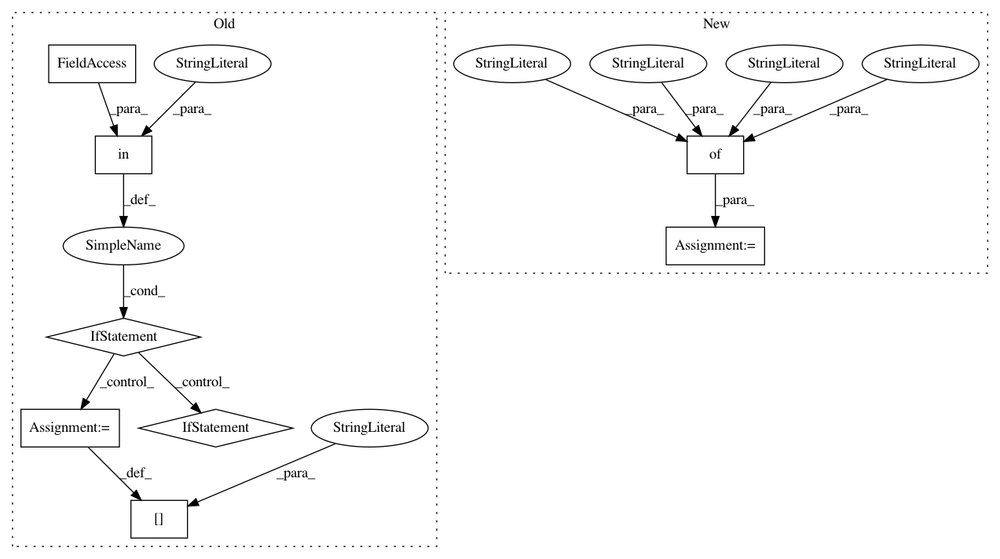

e2799c64b7b8248de872ca7fb741080079839710,onmt/translate/translator.py,Translator,_translate_batch_deprecated,#Translator#Any#Any#,648
Before Change
results["scores"] = []
results["attention"] = []
results["batch"] = batch
if "tgt" in batch.__dict__:
results["gold_score"] = self._score_target(
batch, memory_bank, src_lengths, src_vocabs,
batch.src_map if use_src_map else None)
self.model.decoder.init_state(src, memory_bank, enc_states)
else:
results["gold_score"] = [0] * batch_size
// (2) Repeat src objects `beam_size` times.
// We use now batch_size x beam_size (same as fast mode)
src_map = (tile(batch.src_map, beam_size, dim=1)
if use_src_map else None)
self.model.decoder.map_state(
lambda state, dim: tile(state, beam_size, dim=dim))
After Change
src, enc_states, memory_bank, src_lengths = self._run_encoder(batch)
self.model.decoder.init_state(src, memory_bank, enc_states)
results = {
"predictions": [],
"scores": [],
"attention": [],
"batch": batch,
"gold_score": self._gold_score(
batch, memory_bank, src_lengths, src_vocabs, use_src_map,
enc_states, batch_size, src)}
// (2) Repeat src objects `beam_size` times.
// We use now batch_size x beam_size (same as fast mode)
src_map = (tile(batch.src_map, beam_size, dim=1)
In pattern: SUPERPATTERN
Frequency: 3
Non-data size: 8
Instances
Project Name: OpenNMT/OpenNMT-py
Commit Name: e2799c64b7b8248de872ca7fb741080079839710
Time: 2019-02-11
Author: dylan.flaute@gmail.com
File Name: onmt/translate/translator.py
Class Name: Translator
Method Name: _translate_batch_deprecated
Project Name: OpenNMT/OpenNMT-py
Commit Name: e2799c64b7b8248de872ca7fb741080079839710
Time: 2019-02-11
Author: dylan.flaute@gmail.com
File Name: onmt/translate/translator.py
Class Name: Translator
Method Name: _translate_batch
Project Name: flow-project/flow
Commit Name: 157c6d5b638470cbd0d5d0ed0a690db284b6af64
Time: 2017-07-10
Author: akreidieh@gmail.com
File Name: cistar-dev/cistar/scenarios/loop/loop_scenario.py
Class Name: LoopScenario
Method Name: __init__